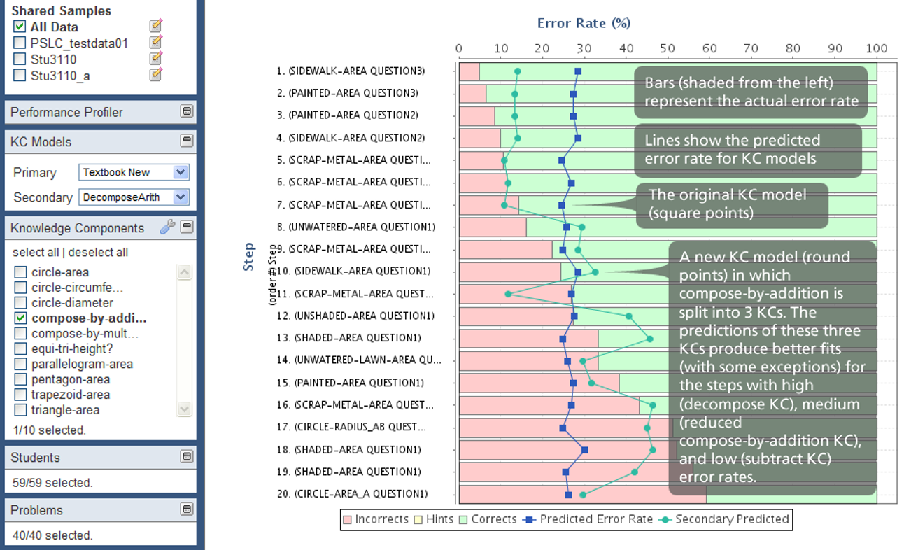

Module 6: Q-Matrix
What is the Q-Matrix?
What is the Q-Matrix? Tatsuoka (1983) B. Barnes (2005)
Example
How do we get a skill-item mapping?
Automatic model discovery
Hand-development and refinement
Hybrid approaches
How do we get a skill-item mapping?
Automatic model discovery
Hand-development and refinement
Hybrid approaches
Automated Model Discovery
- Learn the mapping between items and skills solely from data
Initial algorithm
- Hill-climbing based method T. Barnes, Bitzer, and Vouk (2005)
More common approach lately
First question
- How many skills should we use?
This is determined empirically
Try 1 skill
Try 1 more skill than previous model (e.g. 2,3,4,5…)
Does the new model do better than the previous model?
If so, go to step 2.
If not, quit and use the previous model.
How do we know if one Q-matrix is better than another
- Several definitions
Barnes et al.’s definition
Better models have the property that if a student knows skill X
And item 1 and item 2 both have skill X
Then a student who gets item 1 right will be more likely to get item 2 right
And item 1 wrong → item 2 wrong
And item 2 right → item 1 right
And item 2 wrong → item 1 wrong
Barnes et al.’s definition
- Given a skill-item mapping, you can predict, for each combination of skills whether a student should get each item correct or not
- A model’s degree of error is based on how many item-student pairs the prediction gets wrong
And forward from there
- You can compare models with different numbers of skills using BIC or AIC or cross-validation Effenberger, Pelánek, and Čechák (2020)
Subtlety
Is skill conjunctive? (as in Barnes)
- You need all relevant skills to get an item right
Or is it compensatory? Beck and Heffernan (2008)
- Any relevant skill leads to getting an item right
Assumption
- Barnes’s approach and NNMF (and most approaches to q-matrix discovery) assume no learning
Alternate Test of Model Goodness
Look at student improvement over time
Fit a model like PFA or BKT from Week 4, and see how well it fits data, given the skill-item mapping
- No point to doing this with DKT-family, since they either skip or fit their own q-matrix!
- No point to doing this with DKT-family, since they either skip or fit their own q-matrix!
Liu and Koedinger (2017), Effenberger, Pelánek, and Čechák (2020), Picones et al. (2022) give examples
How do we get a Q-Matrix?
Automatic model discovery
Hand-development and refinement
Hybrid approaches
Hand Development and Refinement
- The original way that Q-Matrices were created
- A domain expert creates the Q-Matrix using knowledge engineering
Hand Development and Refinement
What kind of data can we use to guide refinement?
Some slides adapted from a talk in my class
by John Stamper
Strategies for Q-Matrix Refinement
- Try to smooth learning curves
- Look for skills with no apparent learning
- Look for problems with unexpected error rates
Tool for doing this
- Pittsburgh Science of Learning Center DataShop
Learning Curve In Brief
- Shows relationship between amount of practice and performance
Spikes in learning curves…
- Often imply two (or more) skills are being treated as a single skill
Spikes in learning curves…
- Often imply two (or more) skills are being treated as a single skill
Spikes in learning curves…
- Often imply two (or more) skills are being treated as a single skill
Example
Possible to look at learning curves for different skill models
(we will discuss this more in a future lecture)
You can inspect curves for individual skills
Also look for problems with unexpected error rates
DataShop can apply model for you!
Applies a mathematical model called LFA (similar to PFA) to data
Can give AIC and BIC goodness measures for different skill-item mappings